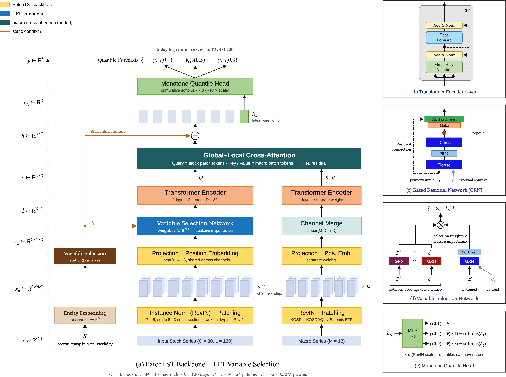
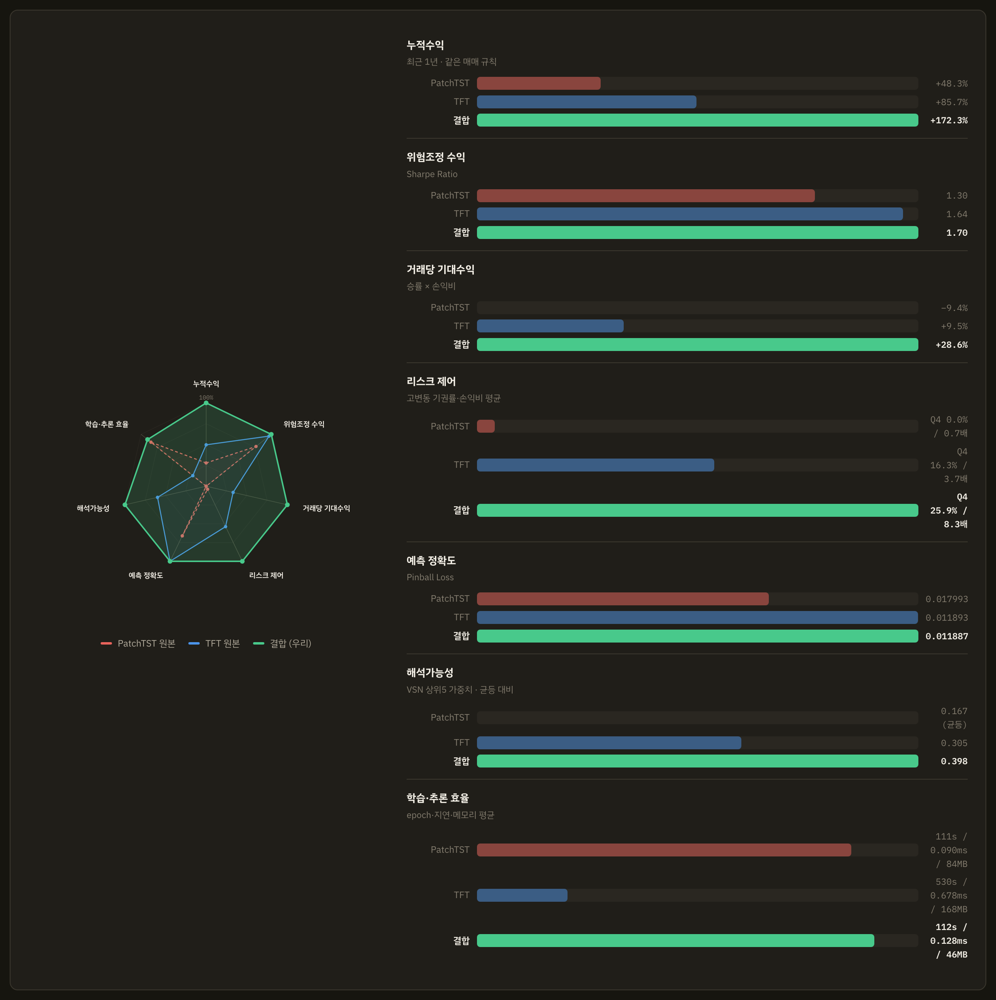
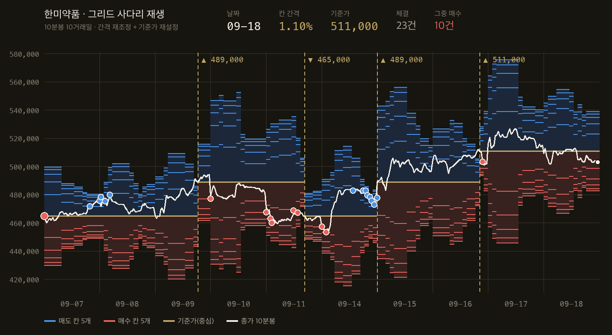
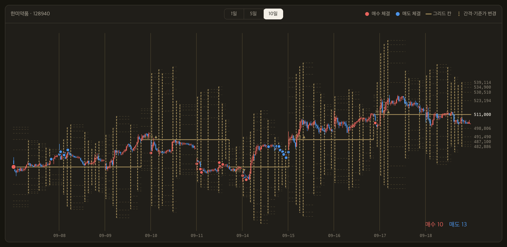

Recombining PatchTST and TFT for interpretable stock return forecasting
Patch-based time-series transformers (PatchTST) tokenize a series in segments and keep channels independent, which makes long lookbacks cheap — but they emit point forecasts and never say which variable they used. The Temporal Fusion Transformer (TFT) fixes both through a Variable Selection Network (VSN) and a quantile head, at the cost of attending at every time step. We recombine parts of both into a 0.50M-parameter model — a PatchTST backbone, TFT variable selection and quantile head, and a macro cross-attention block of our own — and compare it against both originals under one controlled protocol: identical panel, split, seed, training loop, trading rules and evaluation window.
Forecast accuracy is +2.36% against an unconditional-quantile baseline, indistinguishable from the original TFT (+2.32%) and far ahead of the original PatchTST (point forecast, −47.79%). The tie is broken by cost: on one device the TFT needs 529.5 s/epoch against 111.5 s (4.7×), 0.678 ms vs 0.128 ms per-stock inference (5.3×), and 167.8 MB vs 45.8 MB of activation memory (3.7×). Abstention behaves as designed: the model declines 25.9% of candidates in the highest-volatility quartile against 0.45% in the lowest, and its realized payoff ratio is 8.3× versus TFT 3.7× and PatchTST 0.67×.
We report with equal weight what the architecture does not buy. Rank correlation between learned VSN importance and univariate predictive power is −0.03, and the “dynamic” selection is effectively frozen (year-over-year rank agreement 0.988–0.995). Directional information coefficient is 0.024 (t = 3.9) against a width IC of 0.294 (t = 43.8) — twelve times larger — and a permutation test attributes only Sharpe +0.12 (p = 0.25) to the ranking signal. The recombination buys the same quantile accuracy at a quarter of the cost, with learned feature weights attached; the model's competence is uncertainty, not direction.
Keywords time-series transformer · quantile regression · variable selection · interpretability · cross-attention · forecast uncertainty · abstention
Most deep-learning work on return forecasting ports a recent architecture onto a new dataset or tunes it until a metric moves. Neither answers why this architecture. When structure is not derived from requirements, the model is an interchangeable part and no outcome can be explained afterwards.
We began from two operational requirements instead of a model. Abstention: the system must say not only “up or down” but “should a decision be made at all right now?” — which cannot be defined on a point estimate, since it needs a predictive distribution. Interpretability: a decision needs a human-readable basis, and post-hoc attribution explains a surrogate rather than the model's own computation, so the weight must exist as a learned parameter.
These force the architecture. The first demands a quantile head with a pinball loss; the second demands learned variable importance, i.e. the TFT Variable Selection Network. Using TFT as-is makes cost the binding constraint; using PatchTST as-is provides neither. Recombination is not the goal but the consequence — and that is the claim this paper defends, on four axes: accuracy, cost, abstention behaviour, and what the learned importance does and does not mean.
We also report, with the same weight, that the resulting trading performance is not statistically attributable to the model's directional signal. Omitting that would invite exactly the over-reading the paper is trying to avoid.
Patch-based transformers. PatchTST (Nie et al., ICLR 2023) tokenizes a series in segments rather than per time step and keeps channels independent, collapsing a length-L sequence to ⌈L/S⌉ tokens. Two deficits follow: the output is a point forecast, and the model never reports which channel mattered. Our two requirements map onto exactly these two deficits.
Interpretable forecasting. The Temporal Fusion Transformer (Lim et al., 2021) learns a softmax gate over input channels in a Variable Selection Network, transforms each channel through a Gated Residual Network, and emits several quantiles at once. TFT is not state of the art, but no later component replaces “learn variable importance as a gate”; we keep its parts for function, not recency, and discard its per-time-step stack.
Normalization. RevIN (Kim et al., ICLR 2022) applies instance normalization per window and inverts it at the output — not optional where price levels mean different things across stocks and decades. We apply it selectively: cross-sectional rank channels carry their information entirely in the level, which within-window standardization would erase.
Quantile regression. Koenker & Bassett (1978) quantile regression applied to a network output gives the pinball loss, for quantile τ,
trained jointly over τ ∈ {0.1, 0.5, 0.9}. A quantile forecast delivers uncertainty as the prediction itself, so abstention needs neither post-hoc calibration nor ensemble variance.
Our macro cross-attention block was not taken from a paper: we chose to make stock sequences the Query and macro index sequences the Key/Value. But “inject exogenous variables through attention” is not a new idea, and TimeXer (2024) addresses the same problem in print. We did not build on it; we arrived at the same place independently, and we state that alongside the claim.
Baselines. On the public Qlib benchmark, gradient-boosted trees outperform Transformer and LSTM baselines (Rank IC 0.047–0.051 vs 0.041–0.044). “No fair comparison against a well-tuned simple baseline” is the standing weakness of this literature, so we ran one under the same protocol (§5.5). We also considered and rejected DLinear/TSMixer, which can emit quantiles but carry no learned variable importance, and time-series foundation models, whose fine-tuning does not reach scale on roughly 1,900 effective independent observations.
| Requirement | Property it forces | Part chosen |
|---|---|---|
| Abstention | A distribution, not a point: q90−q10 must exist | Quantile head, pinball loss |
| Interpretability | Learned importance, not a post-hoc surrogate | TFT variable selection |
| Scale differs by stock and era | Non-stationary normalization | RevIN, with channel exceptions |
| 120-day lookback × 201 stocks | Sequence-length reduction | Patch tokenization (120 → 24) |
| Local equities track global macro | Exogenous sequence injection | Cross-attention (ours) |
No part was selected because it was recent. Each left-hand entry forces its right-hand one.

Input arrives on three paths: dynamic stock features (30 channels × 120 days), macro sequences (13 channels), and three static categoricals. Static embeddings form a context vector that conditions variable selection and is added back after cross-attention; only the last patch token — the most recent week — reaches the head. Four integration decisions follow, each measured rather than assumed.
Patch embedding turns each channel independently into 24 tokens. This looks like PatchTST's channel independence carried over verbatim, but the reason is different: mixing channels destroys the object the variable selection network is supposed to weight. Channel mixing would leave the VSN undefined. This is where the two requirements collide, interpretability won, and it is the actual graft point between the two lineages.
The VSN applies a softmax gate across the channel axis, conditioned on the static context cs:
Placed after the encoder, the encoder still sees a channel axis and runs once per channel: measured forward pass 259 ms at 17 channels. Placed before, channels are already collapsed and the encoder runs once: 52 ms, a 5× difference. Interpretability is unaffected — the VSN consumes patch embeddings and still answers which channel was used, how much. A regression test pins the ordering so it cannot drift back.
The stock representation is the Query and the macro encoding the Key/Value:
Direction is the design. With macro as Query the output takes the shape of the macro sequence and per-stock forecasts disappear. We deliberately gave the macro path no variable selection: macro channel importance is not an object of interpretation here, and encoding macro per channel costs 13×, so macro channels are merged first and encoded once. The asymmetry is intentional — the VSN goes only where explanation is required.
Cumulative softplus makes quantile crossing impossible by construction, rather than penalized. The reason is operational: a crossing makes the abstention width negative and invalidates every downstream rule. Measured crossing rate for all four models in §5.1 is 0.000.
Initialization matters more than it should. With default weights softplus(0) = 0.693, so the initial inter-quantile gap is 0.69 while the full quantile span of a 5-day return is 0.124 — the output starts nine times larger than the target, and the model spends its whole budget shrinking scale before it can learn signal (validation 0.013993 against a 0.013285 baseline, i.e. 5.3% worse than predicting a constant). Setting the final bias to the training unconditional quantiles fixes it. The final weight must be small but not exactly zero, or no gradient reaches the encoder at all.
| Item | Value |
|---|---|
| Lookback / patch / stride | 120 / 5 / 5 → 24 tokens |
| dmodel / heads / layers / dff / dropout | 32 / 2 / 1 / 64 / 0.5 |
| Quantiles | 0.1, 0.5, 0.9 |
| Dynamic / macro / static inputs | 30 channels / 13 channels / 3 categoricals |
| Parameters | 0.50M |
Data. Daily bars for the 201 constituents of the KOSPI 200 from 2015 onward (up to 2,857 trading days per stock), plus index and investor-flow series from the same broker API. Trading-halt days arrive as zero volume with open = high = low = close; left in, they produce fake zero returns and distort every volatility estimate, so they are removed before indicators are computed. Stocks have different calendars (1,887 common days against 2,857 total), so windows are built on each stock's own rows rather than on a forced common calendar, which would discard 34% of the data.
Features. Thirty dynamic channels — returns and momentum, trading activity, moving-average gaps, standard technical indicators, index-relative strength and beta with their cross-sectional ranks, and four investor-flow series. Thirteen macro channels and three static categoricals (sector, market-cap bucket, weekday). Price levels are never used raw: moving averages become gaps to close, MACD and ATR are divided by close, bounded oscillators are rescaled.
Target. The 5-day cumulative log return in excess of the KOSPI 200, with auxiliary 1-, 2- and 3-day horizons learned from the same window as a multi-task regularizer.
Split. Global by date, never by stock: training through 2022, validation 2023, test from 2024, with a 5-day embargo at each boundary because the label looks five days ahead. Normalization statistics are estimated on training rows only.
Adjacent samples share 119 of 120 lookback days (99.2% input overlap) and four of five target days. Nominal training rows number 260,339, but non-overlapping samples are about 52,097 and effective independent events are roughly 1,900 trading days — 201 stocks on one date share a market factor. Capacity was chosen against that number, not the nominal one.
Baseline. Every experiment is scored against the unconditional quantiles of the training data — a predictor that ignores its input and emits three constants. Failing to beat it is treated as a feature/target design failure rather than a tuning problem.
From forecast to order. One rule set, applied identically to every model compared here: abstain when the interval width exceeds a percentile of its recent distribution; rank survivors by the median forecast and hold the top N, with a hysteresis buffer so an existing position is sold only once it falls well outside the entry rank; size by confidence, so a narrower interval gets more weight; then apply per-name weight caps, a stop-loss and a daily trade cap.
Under an absolute abstention threshold, training that ended in the 2022 drawdown left the model's median forecast (−0.15%) below the realized mean (+0.80%), so the buy threshold (+0.40%) was structurally unreachable: 64 fills in 2.1 years at 8.9% average exposure. The strategy had not lost — it had not participated. Switching to cross-sectional ranking moved fills to 1,247, exposure to 66.5% and Sharpe from 0.14 to 0.88. A level that does not transfer across regimes is not a gate but a constant, and the same failure recurred later with an absolute tail-risk limit (§6.3).
All four models share panel, split, seed, training loop and early stopping. The unconditional baseline came out at 0.012175 for all four — numerical evidence that the control held.
| Model | Params | Pinball | vs baseline | Best epoch | Crossings |
|---|---|---|---|---|---|
| PatchTST, original (point) | 0.034M | 0.017993 | −47.79% | 1 | 0.000 |
| PatchTST + quantile head | 0.035M | 0.012143 | +0.26% | 5 | 0.000 |
| TFT, original | 0.687M | 0.011893 | +2.32% | 2 | 0.000 |
| Ours (PatchTST × TFT) | 0.500M | 0.011887 | +2.36% | 5 | 0.000 |
A point-forecast backbone is not merely worse here; it is unusable. Evaluated by pinball, an MSE-trained point forecast is a degenerate distribution, which is the quantitative form of the abstention requirement: without a distribution, abstention is undefined. Attaching a quantile head is necessary but not sufficient — it recovers only to +0.26%, barely above a constant, because variable selection, static context and macro input are still missing. TFT and our model are tied on accuracy, and we claim no win here; the tie is broken by Table 2.
| Model | s / epoch | Latency / stock | Universe pass | Activation | Params |
|---|---|---|---|---|---|
| PatchTST (+ quantile head) | 111.1 | 0.090 ms | 18.0 ms | 84.0 MB | 0.14 MB |
| TFT, original | 529.5 | 0.678 ms | 136.2 ms | 167.8 MB | 2.75 MB |
| Ours | 111.5 | 0.128 ms | 25.7 ms | 45.8 MB | 2.00 MB |
At identical accuracy, our model trains 4.7× faster, infers 5.3× faster per stock, and holds 3.7× less activation memory than the TFT. Activation cost scales linearly in lookback for both, so the gap is structural rather than a constant offset: patch tokenization removes a factor of five from the attended sequence, and the single-pass encoder removes the channel loop. The 1.4× parameter advantage is secondary — the real saving is in activations and wall-clock.
Because effective independent events number about 1,900, capacity was swept before anything else. The 1.88M configuration peaked at epoch 1 — still inside learning-rate warmup — and from epoch 2 its validation loss was worse than a constant while training loss kept falling: immediate overfitting. A best epoch of one is itself a symptom, which is why two intermediate sizes were rejected despite respectable margins.
| Preset | Parameters | Pinball | vs baseline | Best epoch |
|---|---|---|---|---|
| current | 1.88M | 0.014177 | +0.51% | 1 — overfits |
| tiny | 0.49M | 0.013799 | +3.16% | 1 |
| small | 0.67M | 0.013782 | +3.28% | 1 |
| minimal | 0.33M | 0.013772 | +3.35% | 3 — only clean run |
The improvement is 2.8σ under a date-level block bootstrap. An i.i.d. assumption would report 5.5σ, but same-day stocks share a market factor, so the block figure is the correct one. The deployed model is 0.50M rather than 0.33M only because the universe and channel count later grew; the shape settings are unchanged.

| Model | Total | Vol | Sharpe | MDD | Calmar | Hit |
|---|---|---|---|---|---|---|
| PatchTST, original | +48.3% | 50.0% | 1.063 | −36.2% | 1.385 | 58.4% |
| PatchTST + quantile | +55.4% | 48.6% | 1.178 | −32.9% | 1.749 | 58.9% |
| TFT, original | +85.7% | 41.1% | 1.765 | −24.4% | 3.664 | 58.9% |
| Ours | +172.3% | 54.2% | 2.185 | −33.6% | 5.401 | 62.1% |
| Benchmark index | +124.2% | 59.1% | 1.707 | −40.9% | 3.180 | 62.8% |
| Model | Abstain | Q1 | Q4 | Trips | Win rate | Payoff | Expectancy |
|---|---|---|---|---|---|---|---|
| PatchTST, original | 0.0% | 0.0% | 0.0% | 23 | 13.0% | 0.67× | −9.35% |
| PatchTST + quantile | 4.72% | 0.44% | 12.07% | 32 | 37.5% | 2.44× | +3.62% |
| TFT, original | 5.80% | 0.00% | 16.28% | 41 | 36.6% | 3.70× | +9.51% |
| Ours | 7.91% | 0.45% | 25.88% | 46 | 34.8% | 8.28× | +28.6% |
The trading rule is identical across rows; only the forecast distribution differs. The point-forecast model abstains on nothing because it has no width to threshold, and its expectancy is negative. Adding a quantile head alone turns expectancy positive. Adding variable selection, static context and macro input pushes Q4 abstention to 25.9% while Q1 stays at 0.45% — the model declines 57× more often in the most volatile quartile than in the calmest. Win rate does not improve (34.8%, lowest of the three quantile models); the entire gain is payoff asymmetry, which is what one should expect if the model is pricing uncertainty rather than calling direction.
The window is one calendar slice of a historic bull market, and shifting the start date by a few days moves the same strategy's six-month result between −9.4% and +10.3%. A separate ten-slice study of the production configuration beat the index in 9/10 two-year slices and 8/10 one-year slices but only 3/10 six-month slices — and that configuration was selected on test, because validation (2023) is a flat year in which every configuration clusters within 1.2 percentage points and cannot discriminate. Section 5.5 then shows the ranking signal is not statistically attributable. The defensible claim from Table 3 is relative: under one rule set and one window, the recombined model dominated both originals.
Uniform mass over thirty channels is 0.167. Both VSN-bearing models concentrate well above that floor, and ours concentrates 2.4× above uniform. The composition differs informatively: the TFT spends three of its top five on macro channels it receives as concatenated inputs, while our model — which reaches macro through a separate cross-attention path — spends its top five on stock-level volatility and activity. Separating the macro path changes what the selector selects.
| Model | Top channels | Top-5 mass |
|---|---|---|
| PatchTST + quantile | no selection exists — weights are uniform | 0.167 |
| TFT, original | ATR · index 5-day return · index volume ratio · index 1-day return · pension flow | 0.305 |
| Ours | volume z-score · Bollinger width · turnover z-score · volume ratio · retail flow | 0.398 |
Concentration, however, is not correctness. Measured across 75,975 test windows, the rank correlation between VSN importance and univariate predictive power is −0.03: ATR ranks first by VSN weight and thirteenth by univariate IC, while the strongest univariate channel ranks seventh. This does not mean the VSN is wrong — a VSN weight is the share a channel receives in building the representation, not its contribution to directional prediction, and the volatility-heavy top five is consistent with §5.6. But importance weights read as “this feature predicts returns” and do not mean that, so we publish them next to univariate IC rather than alone.
Per-window rank against global mean rank correlates at 0.966; a 300-draw date bootstrap gives a rank standard deviation of 0.00 on every channel; year-over-year rank agreement across 2024–2026 is 0.988–0.995. Stability helps reproducibility, but the sentence “the model looks at different variables in different situations” cannot be written. This model's variable selection is close to one learned global weight vector.
Against gradient boosting. Under the same panel, split, embargo, target, evaluation and trading configuration — with trees given lagged features since they cannot ingest sequences — the transformer reaches rank IC +0.0235 (t = 3.87) against the tree's +0.0043 (t = 0.56), which is indistinguishable from zero. This runs opposite to the Qlib benchmark ordering; with a different market and feature set it is no refutation of that literature, but it does answer the baseline objection.
Permutation test. Shuffling only the median-forecast ranking while holding everything else fixed attributes Sharpe +0.12, p = 0.25. Most of the measured performance is not attributable to the model's ranking; it comes from the trading rules, the large-cap candidate pool and exposure to a rising market.
Spread against cost. The decile spread is +0.0005 against a round-trip cost of 0.0031 — the signal is one-sixth of the cost of acting on it. This single line explains why an architecture that wins on accuracy does not convert into reliable alpha, and no amount of rule tuning changes it.
Target alignment. Removing a market-cap look-ahead and widening the universe destroyed the apparent directional skill (rank IC +0.0235 → −0.0018). Aligning the target to excess return then made the signal strong but sign-inverted on test (−0.0244, t = −3.70), because the model had no channel with which to see whether a stock was beating the index — it was riding a low-volatility factor instead. Adding relative-strength and beta channels with their cross-sectional ranks aligned validation and test signs for the first time (+0.0197, t = +2.69), with no significantly negative quarter in test. That is the one configuration in this project that passed both splits.
| Measure | Result |
|---|---|
| Interval coverage (nominal 80%) | 78.6% |
| Conformal correction required | +0.024 — negligible |
| Directional IC (median vs realized return) | 0.024 (t = 3.9) |
| Width IC (interval vs realized volatility) | 0.294 (t = 43.8) |
The ability to forecast width exceeds the ability to forecast direction by a factor of twelve. Four independent measurements agree — the permutation test, the VSN composition, these two ICs, and the payoff asymmetry of Table 4. Pinball loss even improved in the same experiment where directional IC collapsed, which is not a contradiction: the cheapest way to lower pinball is to predict width, and width is predictable because volatility clusters. The honest statement of this model's competence is “it knows when not to decide,” not “it picks winners.” The abstention requirement, chosen for product reasons, happened to match the only thing the model does well.
If the reliable output is interval width, it should be spent where width is the parameter rather than where direction is. We therefore added an execution layer in which the forecast interval sets the rung spacing of a limit-order grid:
with five rungs above and below, a cycle equal to the model's five-day forecast horizon — running ten days on a five-day forecast would leave half the cycle unspoken for — and a cycle stop-loss. The floor exists because a rung narrower than twice the round-trip cost loses money every time it fills.


Re-computing the width daily is the one change in this layer that passed both validation and test: paired by cycle against an exposure-matched control across 198 stocks, +0.049 pp (t = 4.47, p < 0.001) on validation and +0.037 pp (t = 3.35, p = 0.001) on test.
Running the identical rule on a 20-day realized-volatility estimate instead of the model's width gives no difference (p = 0.57 on validation, 0.81 on test). The gain comes from re-measuring daily, and we could not separate what we re-measure with. The case for the model is that its initial width does beat a fixed width, and that it costs nothing extra. Claiming “the model adapts the grid to the market” without this control would be overstatement.
Two further results are negative and recorded as such. Re-centring the ladder bought no profit (p = 0.61) but bought presence: time spent outside the ladder, during which no rung can fill and the strategy effectively does not exist, fell from 34.8% to 1.2% of affected cycles. Ladder asymmetry driven by quantile skew was rejected outright — the model's quantiles are nearly symmetric, so the ladder barely tilts, and it won fewer than half of test cycles.
This layer also reproduces, in a different market and at four times the transaction cost, the published result that a grid's expectation is zero before costs: at 0.5% spacing our idiosyncratic return falls 34% below an exposure-matched control, while drawdown in a falling leg is roughly a third of buy-and-hold.
Comparison fairness. Four caveats attach to §5.1–5.3, all working against our own claim. The PatchTST baselines see fewer inputs, because the original architecture has no concept of macro or static covariates — so this is a comparison of what one gives up by using the original as-is, not a pure architecture comparison. Hyperparameters were tuned for our structure and handed unchanged to the controls, where they are not optimal. Only our model trained on a CUDA device; the cost table is normalized to one device. And there is one test window with no walk-forward, in a historically strong bull market.
Explainability has a boundary. Portfolio-level explanation works: which channels carry representation weight, why a position was declined, and which share of performance is signal rather than rule. Name-level explanation does not: why a particular stock entered today's selection, or how the median ordering arrived at its order, cannot be answered. Abstention is the single exception, because it is explained by one number.
Attribution. Restating §5.5 as a limitation: permutation p = 0.25 and a decile spread at one-sixth of round-trip cost mean performance is not attributable to the ranking signal.
Raising dropout from 0.5 to 0.65 delayed the best epoch and improved validation loss — while rank IC collapsed from 0.0513 to 0.0010. The model had abandoned direction and was fitting width alone. Validation pinball cannot detect this, so any regularization change must be checked against out-of-sample rank IC and the permutation test.
Data bias. The universe is drawn at the present date, so firms delisted since 2015 were never candidates and returns are optimistic by an unmeasured margin. Training ends in the 2022 drawdown, a regime the ranking formulation circumvents rather than removes. A six-month result flips between −9.4% and +10.3% across five days of start-date offset, so no single window should be cited. Share counts come from a present-day snapshot: splits cancel exactly against adjusted prices, but rights issues and buybacks do not.
Costs and capacity. Realized commission on a live paper account is 35 bp per side against the 15.5 bp assumed in evaluation — 2.3×, which alone is enough to erase an edge worth one-sixth of cost. Under a square-root impact model fitted to 994 actual fills, market impact consumes the entire measured signal contribution somewhere in the hundreds of millions to low billions of won. This strategy is meaningful at individual-account scale and does not extend to institutional size. Over 31 live trading days the paper account returned −3.40%.
Herding. Every input is a public price or volume derivative, the architecture and target are literature standards, and the universe is 201 large caps with heavy overlap. Models built from the same ingredients buy the same names on the same day. A hysteresis buffer cuts new entries per rebalance by 56%, so the same signal does not produce the same-day exit — that is a mitigation, not a solution.
What the recombination buys. The same quantile accuracy as the original TFT — +2.36% against +2.32% on an identical baseline, with per-quantile losses agreeing to four decimals — at 4.7× less training time, 5.3× less inference latency and 3.7× less activation memory, with learned per-channel importance attached. Against the original PatchTST, which cannot express a distribution at all, the gap is categorical rather than incremental: no abstention is definable, the payoff ratio sits below one, and expectancy is negative. Under one rule set and one window the recombined model dominated both originals, declining 25.9% of the most volatile quartile against 0.45% of the calmest.
What it does not buy. Not direction. Width IC exceeds directional IC twelvefold, a permutation test attributes p = 0.25 to the ranking signal, the decile spread is one-sixth of round-trip cost, and the learned importance behind the interpretability claim correlates at −0.03 with univariate predictive power while being effectively frozen across years.
Deriving architecture from requirements produced something better than the requirements asked for and worse than the project hoped: the abstention requirement, chosen for product reasons, turned out to align with the only thing this model does well. We would recommend that work in this setting spend the forecast where the model is strong — sizing, abstention, execution spacing — rather than on name selection; treat a permutation test and a univariate-IC contrast as mandatory rather than optional; and report cost in activations and wall-clock, because at this data scale the binding constraint on architecture is not accuracy but what fits in the compute budget.
References 7–9 were read in full; the remainder are pending verification against original sources.
All trading results in this paper come from a simulated paper-trading account. Nothing in this document is investment advice.